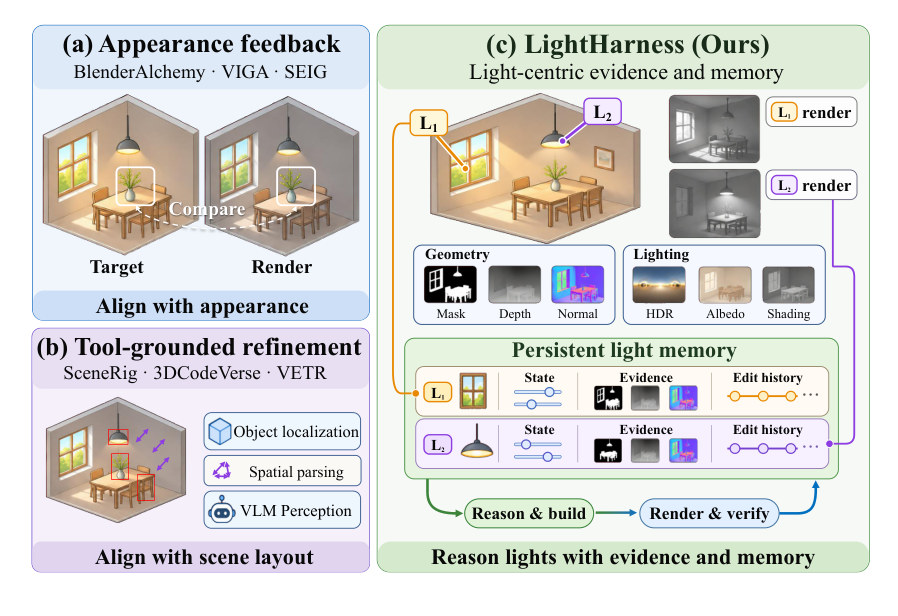
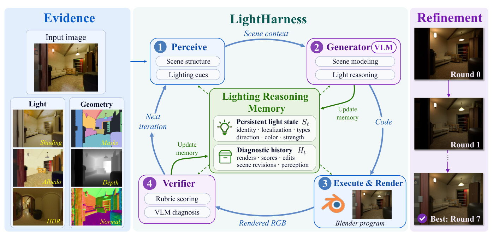
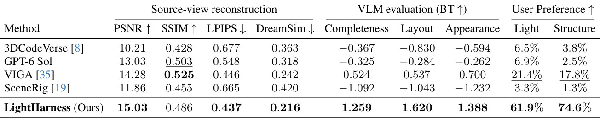
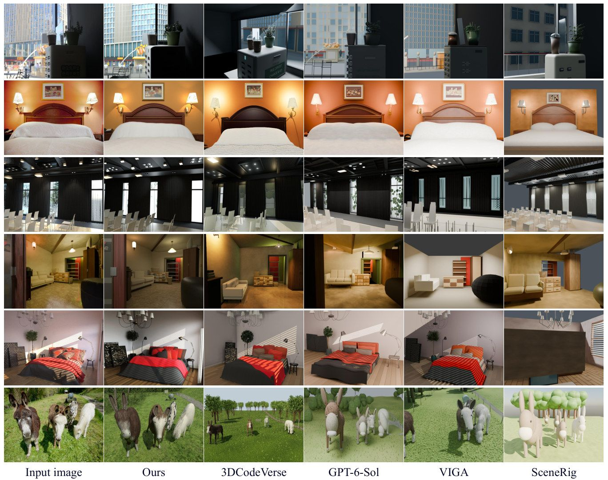
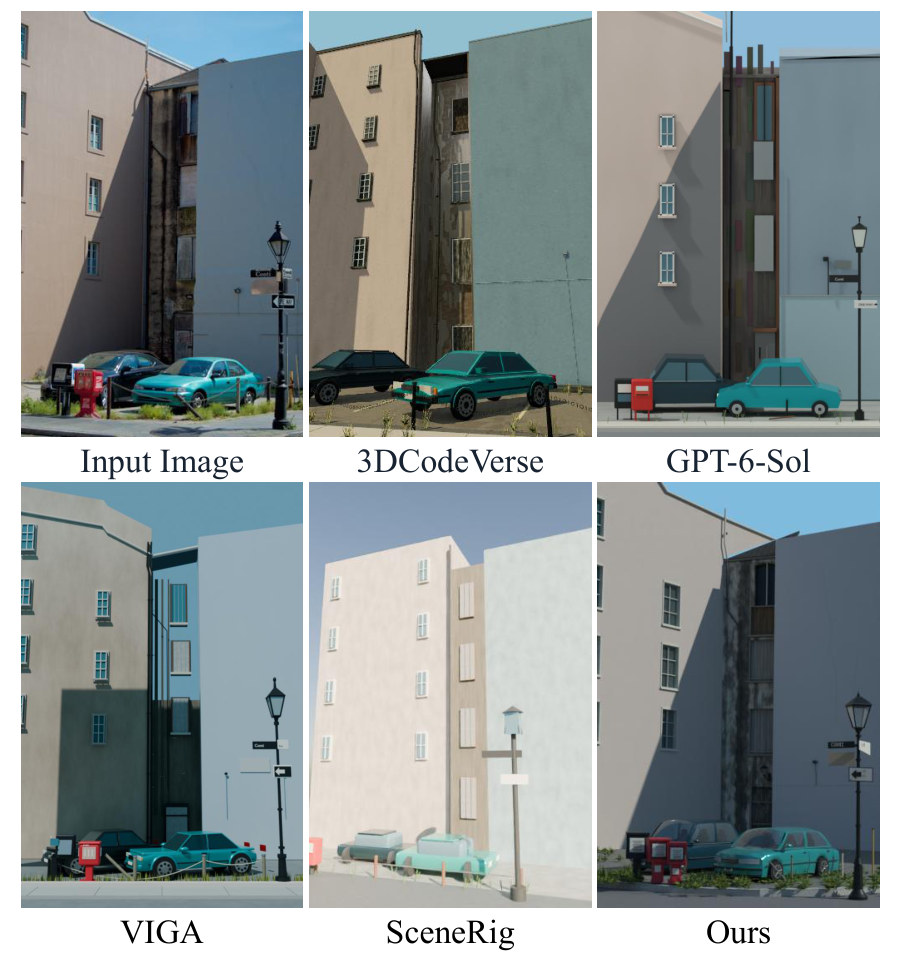
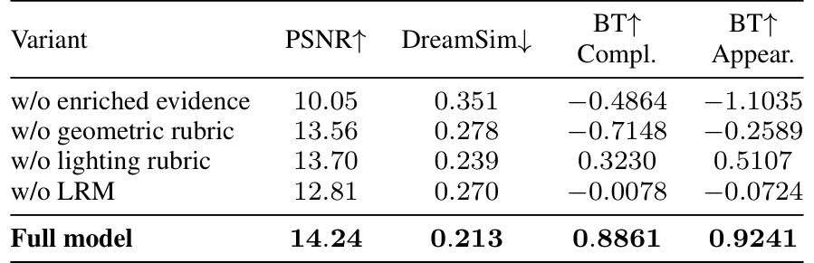
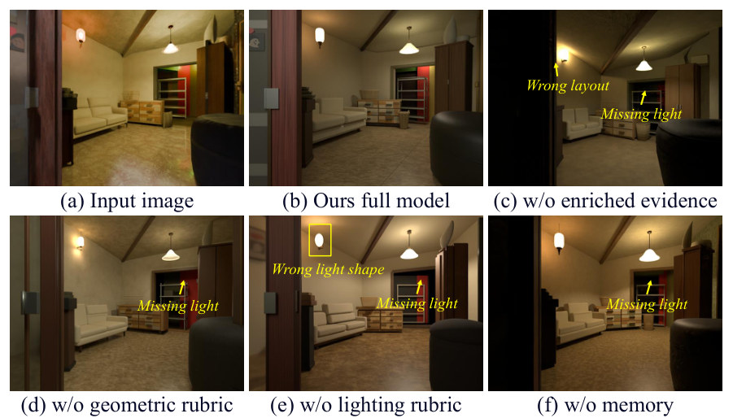
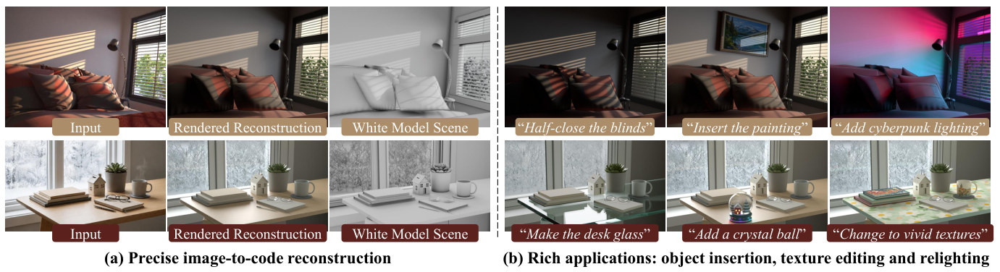
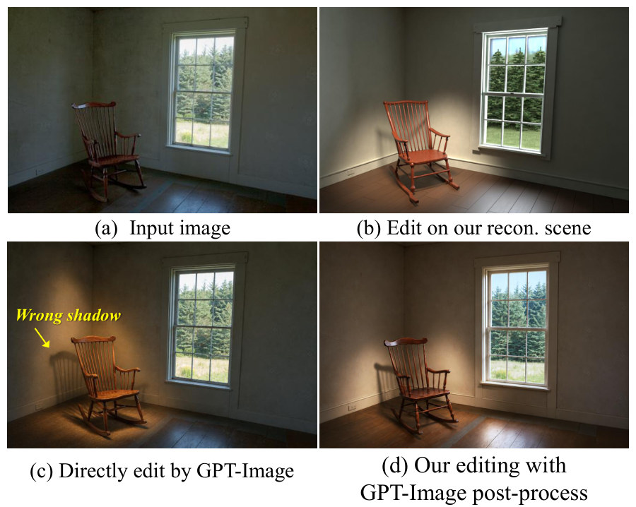
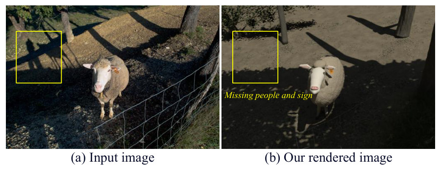

Agent-centric-real-to-sim · 归档于 2026-11-23
LightHarness
Beyond Appearance: Evidence-Guided Programmatic 3D Scene Reconstruction with Agentic Lighting Reasoning
归档到 Agent-centric real-to-sim：单张照片 → VLM agent 写出几何、材质、光源都显式的 Blender 场景程序，属于场景重建；只做视觉仿真，没有物理。它的“生成–验证–逐光源记忆” harness 也值得 Robotic harness 参考
TL;DR
- Problem
- 单图 → Blender 程序的 agent 主要靠“渲染图和原图哪里不像”来改；可一块暗区可能是材质暗、面背着光，或者看不见的光源不够，外观差分不出来，常把光照错误“修”成材质错误。
- Idea
- 给 VLM 一套固定证据（SAM 3 + VGGT 几何、Marigold albedo/shading、LUMEN HDR）和一份 Lighting Reasoning Memory（每个光源一条：状态、证据、修改史，含被挡和画外的光源）；Generator 出代码和光源修改，Verifier 用 6 项 rubric 加 VLM 诊断找原因，跑 10 轮，选分最好的一轮。
- Result
- 32 张图上 PSNR 15.03（VIGA 14.28）、DreamSim 0.216（0.242），用户偏好比例 光照 61.9%、结构 74.6%（Table 1）；去掉证据 PSNR 14.24 → 10.05，去掉记忆 → 12.81（Table 2，16 图子集）。
- Physics
- 没有。不做物理仿真，也没有质量、摩擦、接触、关节参数。摘要里的 “visual simulation” 就是 Blender 渲染：参数只有光源（类型、位置、方向、颜色、强度）和材质（代码里是 Principled BSDF 的颜色、roughness、metallic、透射）。
Problem
外观差只说“哪里不像”，不说该改几何、材质还是光，而关键的光源常常不在画面里
Running example · 后面每个 stage 都跟着它走
Mixed-lighting room（项目页的叫法；Fig. 3、Fig. 4 第 4 行、Fig. 6 都是这间客厅）：一张照片 左墙壁灯 + 天花吊灯 + 门洞后货架上的红/绿光，后屋那盏灯本身看不见 → 想要：一个可执行的 Blender 程序，几何、材质和每个光源都显式，渲染出来像原图，之后还能改光、改材质。
flowchart LR IN["客厅单图
壁灯+吊灯+后屋光"] IN --> A1["VIGA
比外观、改代码"] A1 --> AX["灯和天花板没了
PSNR 14.28"]:::gap IN --> B1["SceneRig · 3DCodeVerse
工具定位、对齐布局"] B1 --> BX["门框没了、布局走样
PSNR 11.86 · 10.21"]:::gap IN --> C1["GPT-6-Sol + Codex
通用 harness 写代码"] C1 --> CX["壁灯没光、门框成黑块
PSNR 13.03"]:::gap
“坏在哪”是我看 Fig. 4 第 4 行（同一间客厅）读出来的：VIGA 渲出一个平光白盒子，没有天花板、没有壁灯和吊灯；SceneRig 没门框、右墙缺一块，3DCodeVerse 没门框、沙发转了向；GPT-6-Sol 壁灯处没有光斑。数字是 Table 1 在 32 张图上的平均 PSNR，论文没有这张图的单图分数。“为什么坏”套用的是论文 §1、§3.1 的解释，属推断。
根本问题：外观差不能唯一指出原因：几何、反射率、光照都能造出同样的差；这张图里决定后屋颜色的光源又根本看不见。 这篇的切入点：先给 VLM 能把三者分开的证据，再给每个光源记一条带证据和修改史的假设，跨轮带着走。
Related work

怎么读这张图
- (a) Appearance feedback（BlenderAlchemy · VIGA · SEIG）：Target 和 Render 框出同一块区域做 “Compare” → “Align with appearance”。客厅后屋偏暗时，这一路只知道“这里太暗”。
- (b) Tool-grounded refinement（SceneRig · 3DCodeVerse · VETR）：红框是定位出的物体，右边三种工具 Object localization / Spatial parsing / VLM Perception → “Align with scene layout”。门框、沙发放对了，光照没人管。
- (c) 上半：图里两个光源 L1（窗）和 L2（吊灯），右上 “L1 render / L2 render” 是每个光源单独的贡献；中间 Geometry（Mask、Depth、Normal）和 Lighting（HDR、Albedo、Shading）是证据。
- (c) 下半 Persistent light memory：每个光源一行，三栏 State（滑杆是参数）、Evidence（这个光源对应的证据图）、Edit history（一串修改节点）→ “Reason & build” → “Render & verify” 再回到记忆。客厅里就是壁灯、吊灯、后屋光各一行。
| 相关工作 | 解决什么 | 怎么解决 | 和本文的区别 |
|---|---|---|---|
| 同一问题 · 别的解法 | |||
| Appearance feedback VIGA · SEIG · BlenderAlchemy | 单图 → 可执行 Blender 程序（BlenderAlchemy 是按渲染反馈编辑） | 渲染图和原图比外观，VLM 改代码；VIGA 带多模态记忆，SEIG 分阶段改几何、材质、光 | 外观差分不出是几何、材质还是光 → 本文加几何、本征、HDR 证据，用分项误差定位原因（VIGA PSNR 14.28 vs 15.03） |
| Tool-grounded refinement SceneRig · 3DCodeVerse · VETR | 单图 → 场景代码，重点是物体位置和布局 | 物体定位、空间解析、VLM 感知把布局对齐；VETR 用执行观测分清“提议的修改”和“实际效果” | 布局对齐了，光源没被当成要推理的对象 → 本文为每个光源维护假设，含看不见的（SceneRig PSNR 11.86、DreamSim 0.420 vs 15.03、0.216） |
| 通用 coding-agent harness GPT-6-Sol + Codex | 任意编程任务，也能写 Blender 场景 | 通用 harness：模型自己写、跑、改代码 | 没有场景证据、打分 rubric、光源记忆 → 本文把这三样做进 harness（PSNR 13.03 vs 15.03） |
| Explicit-light scene agents HARMONY · Lumera | 单图 → 带光照的可编辑场景（论文说是在合成游戏场景上） | 几何先验 + 显式光照建模；Lumera 保留一份共享的 refinement 历史 | 历史是整场景一份，没有逐光源的假设和证据 → 本文每个光源一条记录：状态、证据、修改史（论文没和它们比数字） |
| 相似做法 · 别的问题 | |||
| Inverse rendering / 光照估计 PhotoScene · Materialist · LUMEN | 从图像估几何、反射率和光照，用来编辑或重打光 | 可微渲染优化材质和环境光，或网络直接预测（LUMEN 预测局部 HDR） | 产出是图或优化出的参数，不是可编辑的场景程序 → 本文把 Marigold、LUMEN 的输出当证据喂给 VLM，不训练、不用可微渲染 |
来源：论文 §2 Related Work、Fig. 2 的范式对比、§4.2 的对比方法（Table 1）；未另行检索。库里已有 SceneRig 的页面。
Level 1 · Big picture
把“光从哪来”当成要和几何、材质一起解释的东西：固定证据 + 逐光源记忆，驱动 VLM 的生成–验证循环

符号表（Fig. 3 和 §3 的公式）
| 符号 | 白话 | 在这间客厅里 |
|---|---|---|
| I | 输入照片 | 客厅照片 |
| E | 一次算好、之后不变的证据 | Fig. 3 左栏 6 张图 |
| St | 第 t 轮所有光源的当前状态 | 壁灯、吊灯、后屋光各一条（光源清单是推断） |
| Ht | 到第 t 轮为止的诊断历史 | 每轮的渲染、分数、修改 |
| Mt | 光源记忆，就是 (St, Ht) | 上面两样合起来 |
| Ct | 第 t 轮的 Blender 程序 | 当轮的 scene code |
| ΔSt | 这一轮对光源状态的修改 | 论文没给这间房每轮的具体修改 |
| S̃t | 修改应用并检查过后的光源状态 | 当轮渲染用的那一份 |
| Yt | 当轮渲染出的全部通道 | RGB、mask、深度……每个光源的贡献 |
| qt | 六项误差的加权平均，越小越好 | 用来选最佳轮 |
| T · t* | 总轮数 · qt 最小的有效轮 | 10 · Round 7 |
怎么读这张图
- 左 Evidence：Input image 下面两列，Light（Shading、Albedo、HDR）和 Geometry（Masks、Depth、Normal），就是这间客厅的证据 E，只算一次。
- 中间 ① Perceive（Scene structure、Lighting cues）沿 “Scene context” 箭头交给 ② Generator VLM（Scene modeling、Light reasoning）：先看清结构和光的线索，再一起建模。
- “Code” 箭头 → ③ Execute & Render：Blender 跑 Blender program，出 Rendered RGB（以及其他通道）。
- “Rendered RGB” → ④ Verifier（Rubric scoring、VLM diagnosis）→ “Next iteration” 回到 ①：打分、找原因、进入下一轮。
- 正中 Lighting Reasoning Memory：上格 Persistent light state（St：identity · localization · types / direction · color · strength），下格 Diagnostic history（Ht：renders · scores · edits / scene revisions · perception）。绿色实线 “Update memory” 来自 ② 和 ④（写），虚线连到四个模块。
- 右 Refinement：Round 0 → Round 1 → … → Best: Round 7。Round 0 壁灯和吊灯已经亮了，但左边门框一片黑、后屋几乎没有红光；Round 7 门框的红棕木色和后屋货架的红/绿光都回来了（我对图的读法）。
flowchart LR I["Input
客厅单图"] --> M["证据 + 光源记忆循环
10 轮，第 7 轮最好"]:::win M --> O["Output
Blender 程序
+ 光源状态"]
- 输出（Ct*, S̃t*）：程序和它对应的光源状态成对返回，可以渲染新视角、改材质、插物体、重打光。
- 不需要额外训练，也不用可微渲染；选轮靠打分，不靠梯度（§3.4）。
Level 2 · Stages
6 个 stage，外加一份跨轮的光源记忆
flowchart TD S1["1 · Evidence
6 种证据，只算一次"] --> S2["2 · Perceive
结构 + 光源假设"] S2 --> S3["3 · Generator
代码 + 光源修改"] S3 --> S4["4 · Execute & Render
RGB + 分解通道"] S4 --> S5["5 · Verifier
q_t + 诊断建议"] S5 -->|下一轮| S2 S5 --> S6["6 · Select
Best: Round 7"] M["LRM · 跨轮记忆
壁灯·吊灯·后屋光"]:::win M -.->|读| S3 S3 -.->|写 S_t| M S5 -.->|写 H_t| M click S1 href "#stage-1" click S2 href "#stage-2" click S3 href "#stage-3" click S4 href "#stage-4" click S5 href "#stage-5" click S6 href "#stage-6" click M href "#stage-all"
点击 stage 展开 Level 3 细节；绿色的 LRM 横跨所有 stage，见 Lighting Reasoning Memory。
Level 3 · Details
每个 stage 的细节
标“代码”的条目来自作者仓库（lightagent/prompts.py、state.py、pipeline.py、metrics.py），论文正文没写到这个粒度。
Stage 1 Enriched Evidence 输入图 → 固定证据 E（mask、深度、平面、albedo、shading、HDR）
- Why：外观差分不出原因，先要有能把“形状、材质本色、光”分开的信号（§3.2）。
- How：
- 几何：SAM 3 出逐物体 mask；VGGT 估相对深度和相机，定一个统一坐标系。
- 平面：墙、地这类平面，把 mask 内可靠的深度点反投影，鲁棒拟合加最小二乘细化 → 每个面一个“面上点 + 法线”；非平面物体只留 mask 和深度。
- 本征：Marigold 估 albedo（材质本色）和 diffuse shading（光照明暗），分开反射率和光的效果。
- 光照：LUMEN 出一张 HDR 图，提示光源方向和颜色。
- 证据只算一次、之后不变；变的是 VLM 对它们的解读。
- 代码：SAM 3 的提示来自一次 inventory VLM 调用（物体 id、角色、框，外加初始光源假设）；平面以 JSON 交给 VLM，prompt 写明“法线符号有歧义、不是光照方向”“几何和本征估计只是软证据，不是真值”。
flowchart TD I["输入图 I
客厅照片"] I --> G["几何
SAM 3 · VGGT"] I --> N["本征
Marigold"] I --> H["光照
LUMEN"] G --> P["平面拟合
面上点 + 法线"] P --> E["证据 E，之后不变
6 张图 + 平面表"] N --> E H --> E
Running example 在这一步
Fig. 3 左栏就是这间客厅的证据：Light 列有 Shading、Albedo（门框是红棕木色、墙是米色）、HDR（LUMEN 估的一张全景）；Geometry 列有 Masks、Depth、Normal。墙、地、天花板各得到一个“面上点 + 法线”。
Stage 2 Perceive I + E + Mt → 场景上下文（结构、光源假设、未解决的差异）
- Why：每轮都要把固定证据和最新记忆合成 VLM 能直接用的上下文（§3.5）。
- How：
- 上下文 = 结构线索 + 光源假设 + 还没解决的差异。
- 光源假设可以是部分可见、被遮挡或画外的，由 VLM 在证据引导下提出（§3.3）。
- 代码：每轮由 host 打包：参考图、mask/几何总览、albedo、shading、深度、HDR 预览，上一轮渲染和“上一轮对比与逐光源贡献”图，加上当前光源状态、历史、上一轮代码、逐物体记忆。
flowchart LR A["I + E + M_t
图·证据·记忆"] --> B["Perceive
合成上下文"] B --> C["场景上下文
结构·光源假设
·未解决差异"]
Running example 在这一步
结构：门框、墙、天花板、沙发、斗柜、衣柜、脚凳。光源假设三条：壁灯、吊灯（看得见），后屋光（看不见，只能从货架上的红/绿光推出）。光源清单是我从 Fig. 3 和 Fig. 6 读的，论文没列这间房的光源表。
Stage 3 Generator 上下文 + 上一轮代码 → 新程序 Ct + 光源修改 ΔSt → 检查后的 S̃t
- Why：结构和光要一起改；只调亮材质能让局部变像，却把光照错误留下，材质也估错（§1）。
- How：
- (Ct, ΔSt) = VLM(I, E, Mt, Ct−1)：同时推理结构和光照，出当轮代码和光源状态修改（Eq. 3）。
- 检查状态一致性和光源对应关系后应用：S̃t = Apply(St, ΔSt)。
- 一轮的 contract（代码）：
- VLM 只返回 JSON：
rationale、state_patch、scene_code。 scene_code只定义build_scene(ctx)，只许用 bpy、math、mathutils、random；只建几何和不发光的材质，每个物体用ctx.register绑定稳定 id；不许建灯、相机、World，不许渲染，不许把阴影画进材质颜色。灯由 host 按光源状态建。state_patch=base_revision+reason+upsert_lights/retire_lights/upsert_illumination_groups/world；光源身份不许删或改指，只能带理由 retire。- host 整体校验：版本号过期、缺 reason、有未知字段都拒；被拒的候选不留任何改动；报错和 Blender 日志尾部作为
failed_attempts交回 VLM 重试，次数有上限。 - prompt 规定：先排除几何误差再调灯的功率；改动要小、可解释；保留成功的修改，不重复已经退步的修改。
- 仓库自带的示例 run（BAID 的一张背光图：柜子、杯子、植物，窗外是楼）里，一轮 patch 的 reason 是“只降最主要的室外漫射光，几何、材质、前景光都不动”：agent 在做单变量试验。
- VLM 只返回 JSON：
flowchart TD IN["输入
I · E · M_t · C_t−1"] --> V["Generator VLM
写 rationale"] V --> C["scene_code = C_t
只建几何 + 材质"] V --> P["state_patch = ΔS_t
改哪盏灯 + reason"] C --> K["Host 校验
版本号·reason·字段"]:::win P --> K K -->|不通过：带报错重试| V K --> S["新光源状态
revision + 1"]
Running example 在这一步
Fig. 3 右栏 Round 0 → Round 1：Round 0 的程序已经点亮壁灯和吊灯，但左边门框一片黑、后屋几乎没有红光；之后每轮在代码和光源状态上继续改。论文没列这间房每轮具体改了什么。
Stage 4 Execute & Render Ct + S̃t → 分解渲染 Yt（RGB、mask、深度、表面、albedo、shading、逐光源贡献）
- Why：只出 RGB 又回到外观比对；分解通道才能把差异归到几何、材质或某一盏灯（§3.5）。
- How：
- 相机和渲染设置固定，Blender 渲染 Yt = R(Ct, S̃t)（Eq. 4）。
- 通道：RGB、mask、深度、表面信息、albedo、diffuse shading、每个光源和 World 光照各自的贡献。
- mask 和深度看布局与遮挡；albedo 和 shading 分开材质颜色与光；逐光源贡献看每盏灯照亮了哪块（Fig. 2 (c) 的 “L1 render / L2 render”）。
- 代码：用 Cycles 渲染；相机和曝光由 host 固定，场景代码改不了。
flowchart LR A["C_t + 光源状态
固定相机和设置"] --> R["Blender 渲染
Y_t = R(C_t, S_t)"] R --> O["输出通道
RGB·mask·深度·法线
albedo·shading·逐光源"]
Running example 在这一步
逐光源贡献能直接回答“后屋货架被谁照亮”：如果壁灯、吊灯的贡献在那里都很弱，差异就该记到一个缺失的光源头上，而不是把货架涂红（推断，套用 §3.4 的规则）。
Stage 5 Evidence-Guided Verifier Yt 对照参考证据 → 分数 qt + 诊断建议 → 写入记忆 Mt+1
- Why：一个分不够，要说出“差在哪、改什么、凭什么”（§3.4）。
符号表（Eq. 2）
| 符号 | 白话 | 取值 |
|---|---|---|
| et,k | 第 t 轮第 k 项误差 | 如 mask 误差 |
| wk | 第 k 项的固定权重 | mask 2、深度 1、朝向 0.5、albedo 0.5、shading 1、RGB 1 |
| K | 六项误差的集合 | mask、深度、朝向、albedo、shading、RGB |
- Rubric（确定性）六项：① 物体 mask 投影区域不一致；② 相对深度：正尺度对齐后比重叠的可靠区域，缺覆盖也罚；③ 朝向：深度推出的平面法线，考虑符号歧义；④⑤ albedo 和 diffuse shading：只在可信的漫反射区域、线性色彩空间比，shading 三通道共用一个正尺度以保留颜色差；⑥ RGB 整体外观。
- 打分：qt 是六项误差按 wk 的加权平均（Eq. 2），越低越好；权重各轮固定；不用梯度优化。
- VLM 诊断：拿分项误差、渲染通道、逐光源贡献和 LRM，建议改几何、材质还是光。规则：几何有差先改结构；几何和 albedo 都对，才去看光。每条建议写清差异、修改、证据。
- 写记忆：Mt+1 = (S̃t, Ht ∥ ht)，ht 含诊断、已实施的修改、分数和归档输出的引用；∥ 是在历史末尾追加（Eq. 5）。
- review 的 contract（代码）：
lighting_changes每条带light_id、change、evidence、confidence；另有geometry_changes、material_changes、next_priorities、uncertainties。- 每个物体一个
difference_level：significant / minor / uncertain；只有 significant 才给修改建议。 history_feedback对每条旧建议分开记 implementation（做了没）和 outcome（好没好）；prompt 写明“总分下降不能证明某个物体变好”。- review 只是建议：改持久状态必须由下一轮 builder 交校验过的 patch。缺失的证据记罚分，不当零误差。
- 代码里的权重和论文一致（mask 2、深度 1、朝向 0.5、albedo 0.5、shading 1、RGB 1）。
flowchart TD Y["渲染通道 Y_t
对照参考证据 E"] --> R["Rubric scorer
6 项误差 → q_t"] Y --> D["VLM diagnosis
先几何，后光照"] R --> D D --> A["建议
差异 + 修改 + 证据"] A --> M["写入记忆
H_t ∥ h_t"]:::win
Running example 在这一步
套论文 §3.4 的“墙偏暗”例子：后屋货架偏暗 → 先查朝向和遮挡（几何对吗、被挡了吗），再查 albedo（是不是本来就暗）→ 都对，就指向光照：保留并调整那条看不见的后屋光假设（推断）。去掉光照 rubric 时，壁灯被渲成一个椭圆亮斑、后屋光也丢了（Fig. 6 (e)）。
Stage 6 Select best round 10 轮的 qt → 返回 (Ct*, S̃t*)
- Why：一次修改可能让某些因素变好、另一些变差，最后一轮不一定最好（§3.5）。
- How：
- t* = argmin qt，只在完成的有效轮里选（Eq. 6）。
- 程序和它的光源状态一起返回，保证“选中的场景”和“它的光”对得上。
- 代码：
final/里有geometry.py、属于最佳轮的state.json、scene.blend、render.png、scores.json、selection.json；仓库示例 run 的最佳轮也不是最后一轮。
flowchart LR A["每轮一个 q_t
共 10 轮"] --> B["argmin
只看有效轮"] B --> C["程序 + 光源状态
Round 7"]
Running example 在这一步
10 轮里 Round 7 的 qt 最小（Fig. 3 “Best: Round 7”）：门框的红棕木色和后屋货架的红/绿光都回来了，返回第 7 轮的程序和那一轮的光源状态。
Across stages Lighting Reasoning Memory (LRM) Mt = (St, Ht)，Generator 和 Verifier 共用，每轮读、每轮写
- Why：改了别处（比如补一面墙），某盏灯的贡献就会变，哪怕它的参数没动；所以既要存当前光源状态，也要存当初每个决定的证据（§3.3）。
- How：
- St：每个光源一个稳定身份，绑定到 Blender 元素；状态是可见性、类型、位置、朝向、强度、颜色。
- 部分可见、被遮挡、画外的光源也作为假设存进来，场景光照因此更完整。
- Ht：把每个光源和以前的评估、提议的修改、实施的修改、观察到的结果连起来；还用语义对应把多个光源联系起来（代码里的例子：同一扇窗的阳光和天光属于一个 daylight 组）。
- 去掉 LRM、只留当前代码和参数时，后屋背景光丢了（Fig. 6 (f)），PSNR 14.24 → 12.81（Table 2）。
- 结构示意见上面 Fig. 2 (c) 下半的 Persistent light memory：每个光源一行，State / Evidence / Edit history 三栏。
一条光源记录长什么样（代码 state.py、prompts.py）
| 字段 | 白话 | 可取的值 |
|---|---|---|
id · label | 跨轮不变的身份和名字 | prompt 的格式示例：light_001 · “pendant” |
source_type | 什么光 | direct_sun / sky_diffuse / artificial / unknown |
visibility | 画面里看得见吗 | visible / partial / occluded / off_frame |
status | 现在发不发光 | active / inactive / hypothesis / retired（只有 active 发光） |
confidence · evidence | 多确定、凭什么（必填） | evidence 是 [{source, observation}] 列表 |
elements | 落到 Blender 里的发光体 | AREA / POINT / SPOT / SUN / EMISSIVE_MESH / GEOMETRY，带位置、方向、颜色、能量、尺寸 |
occluded_by | 被哪些物体挡住 | 物体 id 列表 |
environment_relation | 是否已含在 HDR 环境光里（防止重复计光） | independent / possibly_in_hdri / represented_in_hdri |
- Ht 在代码里有两层：光源状态每次 patch 连同
reason记进history；每轮再存一条{round, state_revision, scores, review, archive}。
flowchart TD M["LRM：M_t = (S_t, H_t)
Generator、Verifier 共用"] M --> S["S_t 光源状态
每个光源一条"] M --> H["H_t 诊断历史
每轮追加 h_t"] S --> L1["壁灯
看得见"]:::example S --> L2["吊灯
看得见"]:::example S --> L3["后屋光
看不见 · 假设"]:::example
Running example 在这一步
三条记录（推断）：壁灯、吊灯是 visible；后屋光是看不见的假设，证据是货架上的红/绿色光斑。记忆让这条假设跨轮保留；没有记忆的版本恰好丢了后屋背景光（Fig. 6 (f)）。
Recap：例子覆盖了论文的哪些 idea
| 论文里的 idea | 例子里在哪体现 |
|---|---|
| Enriched evidence：几何 + 本征 + 光照 | Stage 1：客厅的 Masks、Depth、Normal、Albedo、Shading、HDR（Fig. 3 左） |
| 平面拟合（面上点 + 法线） | Stage 1：墙、地、天花板 |
| Perceive 出场景上下文 | Stage 2：结构 + 壁灯、吊灯、后屋光三条假设 |
| Generator 同时出代码和光源修改 | Stage 3：Round 0 → Round 1 |
| 分解渲染、逐光源贡献 | Stage 4：查后屋货架被谁照亮 |
| 六项 rubric + 固定权重 | Stage 5：qt 每轮一个 |
| VLM 诊断：先几何，后光照 | Stage 5：后屋偏暗，几何和 albedo 都对 → 查光 |
| LRM：逐光源状态 + 历史，含看不见的光 | Across stages：后屋光作为假设跨轮保留 |
| 选最佳轮 | Stage 6：Best: Round 7 |
| 每个部件都必要 | E4 / Fig. 6：就是这间客厅 |
| 下游编辑（重打光、插物体、改贴图） | E5：论文用卧室、静物、摇椅房间演示，这间客厅没演示 |
| 局限：看不见的物体 | Limits：Fig. 11 的绵羊图 |
Results
比只看外观、只对齐布局的 agent 都更像原图，用户也最偏好；拆掉证据或记忆都明显变差
顺序同论文 §4：E1 和四个 image-to-code 方法比准确度 → E2 斜阴影难例 → E3 耗时 → E4 拆部件（就在这间客厅上）→ E5 下游编辑。比的是重建和原图的一致程度（像素、感知、VLM 评委、用户），外加耗时；没有物理或机器人指标。
E1和现有 image-to-code 方法比，重建更准吗？§4.2 · Table 1 · Fig. 4


- 说明什么
- 源视角最准，VLM 评委和用户都最偏好。PSNR 15.03 vs VIGA 14.28（+0.75 dB）；DreamSim 0.216 vs 0.242（论文：降 10.7%）；LPIPS 0.437 vs 0.446；SSIM 0.486 只排第三（VIGA 0.525、GPT-6-Sol 0.503）；BT 三项 1.259 / 1.620 / 1.388（VIGA 0.524 / 0.537 / 0.700）；用户偏好 光照 61.9%、结构 74.6%（VIGA 21.4%、17.8%）。SceneRig（库里已有）PSNR 11.86、DreamSim 0.420。
- 在故事里
- 证明“加证据 + 光源记忆”比只看外观（VIGA）和用工具对齐布局（SceneRig、3DCodeVerse）都更准，也比通用 coding harness（GPT-6-Sol + Codex）强。
- 指标
- PSNR、SSIM、LPIPS、DreamSim：源视角渲染对输入图。BT：照 SceneRig 的做法，相机绕世界竖直轴转 ±15°（枢轴在原相机视线前方 4 个场景单位），GPT-6-Astra 当评委两两比较，算 mean-centered Bradley-Terry 分，越高越好。用户：29 人按（1）结构保真、（2）光照保真排序，表里是偏好比例。
- 怎么评测
- 32 张图：Hypersim 10、LuxRemix 4、BAID 10、MIT-Adobe FiveK 7、RoboDojo 1；17 张真实、15 张合成；22 室内、10 室外。本文跑 10 轮。
- VIGA、3DCodeVerse、SceneRig 都换成 GPT-6-Astra 作 backbone，循环轮数和 API 相同；GPT-6-Sol 用 Codex harness 另外比。
- 对哪边有利：GPT-6-Astra 既是所有方法的 backbone，又是 BT 评委；新视角只有 VLM 评分，没有像素指标（单图没有新视角真值）；用户研究没说用了几个场景；没有多次运行或误差条。
E2大块斜向投影这种难例，能复现吗？§4.2 · Fig. 5

- 说明什么
- 斜影更像原图（只有定性）。论文说对手把这道影子扭曲或漏掉，本文复现了它的空间范围，同时保住周围楼体。
- 在故事里
- 支撑“证据 + 光源记忆能把阴影形状和几何、光照关联起来”。
- 指标
- 无数字，只有这张图。
- 怎么评测
- 一张街景，五个方法同一输入；只这一个场景。
E3要花多少时间？§4.2 正文
| 一张 768×576 图 | 时间（分钟） |
|---|---|
| 本文 · 证据提取（SAM 3、VGGT、Marigold、LUMEN） | 4.5 |
| 本文 · GPT API（生成–验证循环） | 118.8 |
| 本文 · Blender 渲染 | 1.1 |
| VIGA（整体） | 71.2 |
| 3DCodeVerse（整体） | 126.3 |
按 §4.2 正文数字整理的表；SceneRig 和 GPT-6-Sol 没报耗时。
- 说明什么
- 和 baseline 同一量级，瓶颈是 API。API 118.8 分钟占大头，本地部分不到 6 分钟；VIGA 71.2 分钟明显更快，3DCodeVerse 126.3 分钟。
- 在故事里
- 说明多出来的证据和记忆不怎么增加本地开销，代价主要在 VLM 调用。
- 指标
- 单张图的墙钟时间。
- 怎么评测
- 两张 RTX 4090 48 GB 跑外部模型；GPT-6-Astra 走 API。
- baseline 的计时条件文中没细说。
E4证据、几何 rubric、光照 rubric、记忆，各自有用吗？§4.3 · Table 2 · Fig. 6


- 说明什么
- 拆掉任何一个部件都变差，证据最关键。完整模型 PSNR 14.24、DreamSim 0.213；去掉 enriched evidence 10.05 / 0.351；去掉 geometric rubric 13.56 / 0.278；去掉 lighting rubric 13.70 / 0.239；去掉 LRM 12.81 / 0.270。BT 两项完整模型 0.8861 / 0.9241，都最高。
- 在故事里
- 在这间客厅上逐个看部件：没证据 → 壁灯离墙的距离判断错、后屋背景光丢；没几何 rubric → 光照重建不全；没光照 rubric → 壁灯形状错、局部亮度不对；没记忆 → 后屋背景光丢。
- 指标
- 同 E1：PSNR、DreamSim，BT 的 Completeness 和 Appearance。
- 怎么评测
- 为省时间用 16 张图的子集；完整模型这里 PSNR 14.24，和 Table 1 全集的 15.03 不同。
- BT 在本表内重新归一化，不能和 Table 1 直接比。
- “w/o LRM” 只保留当前代码和参数值；“w/o enriched evidence” 关掉 §3.2 的光照和几何证据。权重敏感性在补充材料，不在这份 PDF 里。
E5重建出的场景能拿来编辑吗？§4.4 · Fig. 1 · Fig. 7–10


- 说明什么
- 能编辑，阴影和反射跟着对（只有定性）。在重建场景里改光再渲染，影子方向和光源一致；直接用 GPT-Image 改，影子错（Fig. 9 (c)）、插入的画几何投影错（Fig. 10 (c)），贴图编辑结构不准（Fig. 7 (c)）。
- 在故事里
- 显式几何和光源的价值在下游：编辑改的是程序，不是像素。
- 指标
- 无数字，定性对比。
- 怎么评测
- 每种编辑一个场景（Fig. 1、7–10）；对照组是直接用 GPT-Image 编辑原图；本文结果可再用 GPT-Image 后处理。
- 这间客厅论文没有演示编辑。
Limits
局限和开放问题

- 论文自认：从稀疏、重叠的阴影推断画外物体仍然难（Fig. 11）。未来想用 in-context 示例和在难数据上后训练开源 VLM 来补。
- 慢而贵：一张 768×576 图 GPT API 就要 118.8 分钟；论文把减少 token 预算列为未来工作。
- 评测面窄：32 张图（消融 16 张），没有多次运行；同一个 GPT-6-Astra 既当 backbone 又当 BT 评委；SSIM 不是最好（0.486 vs VIGA 0.525），论文没解释。
- 没有物理：场景没有质量、摩擦、碰撞、关节，也没有机器人实验（测试集里只有 1 张 RoboDojo 图）；“simulation” 只指渲染。
- 补充材料（权重敏感性、换别的 VLM、更多新视角结果）不在这份 arXiv PDF 里，正文没给这些数字。
For Agent-centric real-to-sim
对我们有什么用
- r2s-lite：pot-lid episode 第 9 次靠宽松规则“通过”而场景是错的，正是本文说的“外观或一个总分对了，原因却错了”。可搬两件事：把总分拆成分项误差，权重固定，缺证据记罚分而不当零误差；reviewer 对每条旧建议分开记“做了没有 / 变好没有”（代码的
history_feedback），总分下降不算证明。 - harness 结构（r2s-lite 和 WorldClaw 的 agent 循环都适用）：VLM 不直接写灯，只交带
base_revision和reason的 state patch，host 整体校验后才提交，被拒不留痕；灯、相机、渲染归 host。我们的物理参数（质量、摩擦、关节）也可以这样做成 host 拥有的状态，每次改动自带理由和版本号。 - real2sim-anything-indoor（视频 → Blender 房间）：本文正好补“打光”这一层，可直接试它的证据栈（SAM 3 + VGGT 平面 + Marigold + LUMEN）和逐光源记忆（含看不见的光源）。但它只有视觉仿真：几何是白模加 BSDF 材质，没有质量、摩擦、碰撞，要进 WorldClaw 的 Genesis 还得另补物理。